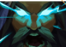

- 


Udyr invoca temporariamente uma tempestade ao seu redor, causando Lentidão e dano a unidades próximas. Os próximos dois ataques fazem a tempestade pulsar, causando Dano Mágico adicional.
Udyr liberta a tempestade, que passa a causar dano adicional e perseguir inimigos próximos.